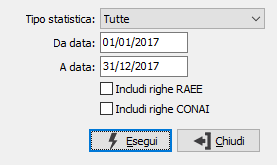

Generazione statistiche
La generazione statistiche permette di aggiornare la base dati utilizzata per le statistiche a partire dalla tabella dei movimenti di magazzino, dalle fatture di vendita, dagli ordini clienti e dagli ordini fornitori. Se attive la gestione del RAEE e/o del CONAI saranno presenti i check per includere anche le righe derivanti da queste gestioni nell'elaborazione delle statistiche.
La generazione effettua una operazione di raggruppamento dei movimenti presenti.
Qualora si intenda gestire le statistiche dal magazzino è possibile costruire non solo statistiche sulle vendite, ma anche statistiche sugli acquisti e sulla produzione.

Se abilitata la pianificazione batch sarà visibile il pulsante Pianifica.